Dark Souls ii: Vývoj a Přijetí
Vydáno na jaře roku 2014, Dark Souls II je dodnes považováno za "černou ovci" rodiny Soulsborne.
Důvodem je především fakt, že šlo o jedinou hru ze série, kterou přímo nerežíroval Hidetaka Miyazaki.
Ten v té době plně věnoval svou pozornost vývoji exkluzivního titulu Bloodborne, a proto se u
DS2 zhostil pouze role supervizora. Režisérské křeslo převzala dvojice Tomohiro Shibuya a Yui Tanimura.
Vývoj hry byl zasažen značnými problémy. V polovině produkce musel Tanimura překopat obrovskou část hry,
protože původní vize narážela na technické limity tehdejších konzolí (PS3 a Xbox 360). To vedlo k
nechvalně proslulému "grafickému downgradu" oproti dechberoucím ukázkám z E3 (herní veletrh) a k jisté
nelogičnosti v
propojování herních lokací (známý výtah, který vede z vrcholu větrného mlýna nahoru do
potopeného
hradu v lávě).
I přes tuto kontroverzi u skalních fanoušků byla hra komerčním i kritickým hitem, s hodnocením
přesahujícím 90 % na Metacritic. V roce 2015 navíc vyšla revidovaná edice Scholar of the First
Sin, která kompletně předělala rozmístění nepřátel, vylepšila grafiku a sjednotila příběh
přidáním nové klíčové postavy (Aldia). Hra také přinesla vynikající balanc zbraní (za mého názoru má
druhé
nejlepší zbraně v sérii, hned za Bloodbornem) a dodnes je
komunitou
považována za díl s absolutně nejlepším Pvp(hráč proti hráči) systémem.
Drangleic a Cyklus Prokletí
Zatímco první díl se soustředil na bohy a stvoření světa, Dark Souls II je mnohem komornější, lidštější a
psychologičtější. Už nezachraňujete svět před vyhasnutím; přicházíte do padlého království Drangleic
primárně z jednoho sobeckého důvodu – abyste našli lék na své vlastní prokletí Nemrtvých, kvůli kterému
zapomínáte na svou minulost, svou rodinu a na to, kým vlastně jste.
Hra brilantně pracuje s motivem "Vyblednutí paměti". Mnoho NPC postav, které v Drangleicu potkáte, vám po
čase přizná, že už vlastně zapomněly, proč do této země vůbec přišly. Hratelnost tento pocit zoufalství
umocňuje mechanikou vzatou až zpátny z Demon's Souls: s každou smrtí postupně klesá vaše maximální
zdraví až na pouhých 50 %, což brutálně
trestá chyby a nutí hráče vážit si jejich lidskosti.
Příběhově se hra točí kolem nevyhnutelnosti Cyklu. Na činech hrdinů z prvního dílu už nezáleží.
Království povstávají a padají. Oheň se znovu a znovu rozněcuje, jen aby zase vyhasl, a jména starých
bohů (Gwyn, jeho potomci...) už jsou dávno zapomenuta, zbyly po nich jen bezejmenné duše, které se
bezvýznamně vstřebávají všemi typy stvoření, navždy. Právě do tohoto
nekonečného, zoufalého kruhu vstupujete s cílem se buď stát dalším palivem, nebo hledat cestu ven.
Zmíněná (ne)propojenost herních lokací je také vysvětlena—Dark Souls II totiž (unikátně) míří pro
více 'pohádkový' směr co se světa týče (ve smyslu díla jako je Alenka v říši divů). Tato nelogičnost a
zmatenost je tudíž
z části záměrná, zachycuje, jak se postava hráče musí cítit s jejich zanikající myslí. Také má
příběhový význam, jelikož s končením Cyklu ohně vždy přichází prostorové a temporální anomálie, jako je
vstupdo minulosti založený na procházením uřčité oblasti, atd.
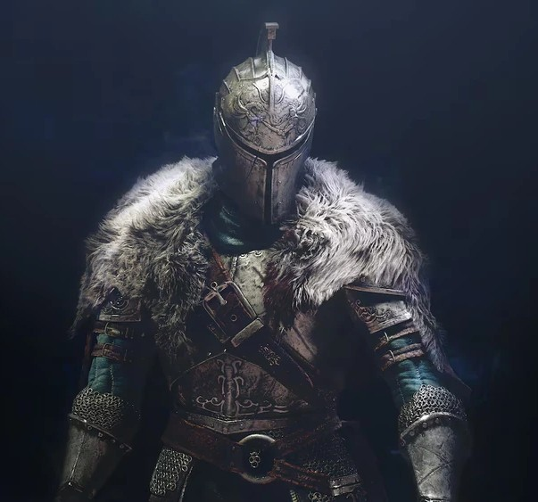
Nositel Klenby
Klikni pro rozbor
Hlavní protagonista příběhu. Na rozdíl od Vyvoleného Nemrtvého z prvního dílu, Nositel Klenby
(Bearer of the Curse) není hrdinou z proroctví. Je to jen obyčejný člověk, který ztratil svou
minulost, svou rodinu a kvůli prokletí nemrtvých pomalu ztrácí i svůj rozum.
Jeho příchod do Drangleicu je veden čistým zoufalstvím a nadějí na nalezení léku. Během své cesty
je však zmanipulován mnoha frakcemi – od Smaragdového Herolda až po samotnou Královnu. Záleží
jen na hráči, zda na konci usedne na Trůn touhy a prodlouží cyklus, nebo odejde do temnoty
hledat jinou cestu.
Zbroj Faraam
Ikonická zbroj Nositele Klenby, pojmenovaná po válečném bohu Faraamovi. Zbroj je
navržena pro obratný boj a poskytuje svému nositeli výbornou ochranu bez ztráty
mobility. Nositel Klenby je v ní vidět v podstatě exklusivně v propagačním
materiálu Dark Souls II (jako je obrázek v tomto okně).
Zbroj, kterou nosili
Lví rytíři z Forossy. Tito těžce ozbrojení bojovníci byli obáváni pro svou
schopnost ovládat dvě zbraně současně. Po pádu Forossy se rozprchli do všech
koutů světa jako nájemní žoldáci.
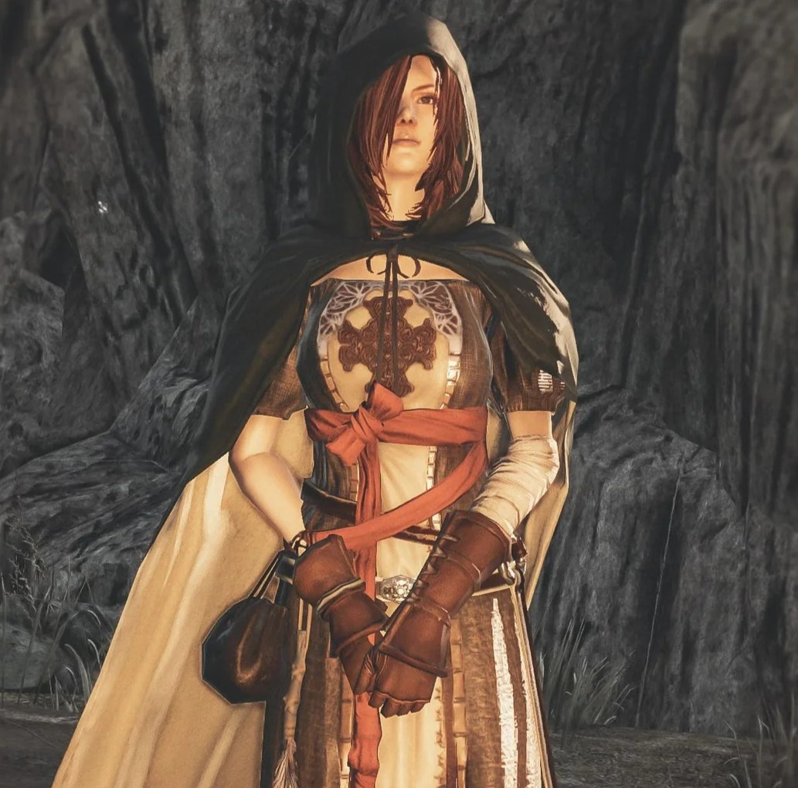
Smaragdový Herold
Klikni pro rozbor
Záhadná dívka čekající v Majule, jejíž skutečné jméno je Shanalotte. Je jediným bodem útěchy pro
ztracené duše, kterým pomáhá zvyšovat jejich úroveň za pomoci sesbíraných duší.
Její existence je tragická. Byla vytvořena draky a samotným Aldiou jako experiment, který měl
nadobro zlomit Cyklus prokletí a odolat vlivu plamene. Experiment však selhal. Nyní, spoutaná
svým účelem, vede Nositele Klenby vpřed, doufajíc, že on dokáže to, k čemu ona byla stvořena, a
dopřeje jí konečně klid.
Pera času (Aged Feather)
Tento předmět získá hráč od Herolda v pozdější fázi hry. Funguje jako nekonečná
Kost pro návrat, umožňující okamžitý přesun k poslednímu ohništi.
Dítě draka, jež nezná
své pravé rodiče, toto pírko chovalo u srdce, snad jako talisman v naději,
že ji jednoho dne vrátí tam, kam patří. Ale nakonec si uvědomila, že už se
nemá kam vrátit.
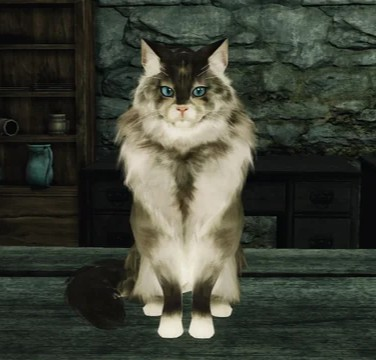
Příjemná Shalquoir
Klikni pro rozbor
Záhadná, sarkastická, nesmrtelná a lidsky inteligentní kočka přebývající v jedné z chatek v
Majule. Zdá se, že jako
jedna z mála bytostí v Drangleicu nepodléhá úpadku paměti a pamatuje si události z pradávných
věků (dokonce i z éry Lordranu a prvního Dark Souls).
Shalquoir je jakýmsi neoficiálním vypravěčem. S pobavením sleduje, jak lidé znovu a znovu opakují
stejné chyby, zaslepeni svými touhami. Odkazuje na staré bohy (např. Seatha či Gwyna) jako na
"hlupáky, co se snažili oklamat osud", a radí Nositeli Klenby, i když její rady bývají zaobalené
do jízlivých hádanek.
Stříbrný kočičí prsten (Silver Cat Ring)
Nesmírně užitečný předmět, který Shalquoir prodává. Razantně snižuje poškození
při pádu z výšky, což je kritické pro průzkum vertikálních lokací jako je
Propast (The Gutter).
Legenda praví, že
jakmile kočka zestárne, stane se z ní magická bytost plná skrytého poznání.
Ale kdo ví... možná jsou to všechno jen pohádky, kterými se lidé utěšují v
temnotě.
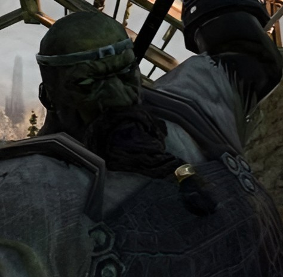
Kovář Lenigrast
Klikni pro rozbor
Zelený, pokročile proměněný nemrtvý (Hollow), který si však navzdory svému děsivému zevnějšku
udržel zdravý rozum. Je to vynikající kovář usazený v Majule, jehož jedinou záchranou před
úplným zešílením je neustálá a monotónní práce se železem.
Lenigrastův příběh perfektně ilustruje tragédii vyblednutí paměti v Drangleicu. Jeho vlastní
dcera, obchodnice Chloanne, sedí jen pár metrů od jeho kovárny. Lenigrast ji okamžitě poznal a
bedlivě ji hlídá, ale Chloanne, jejíž mysl je už prokletím narušená, v něm svého otce nepoznává
– vidí jen ošklivého nemrtvého. On sám jí pravdu neřekne, aby ji nevyděsil.
Kovářské kladivo (Blacksmith's Hammer)
Těžké kladivo, které Lenigrast daruje hráči, pokud u něj utratí dostatek duší.
Překvapivě silná zbraň s vynikajícím poškozením proti obrněným nepřátelům.
Kladivo užívané
kovářem v Majule. Tvarově strohé, ale nesmírně bytelné. Kovář, kterého
zradilo vlastní tělo i paměť, se upnul k tomuto nástroji jako k jediné
jistotě, co mu na světě zbyla.
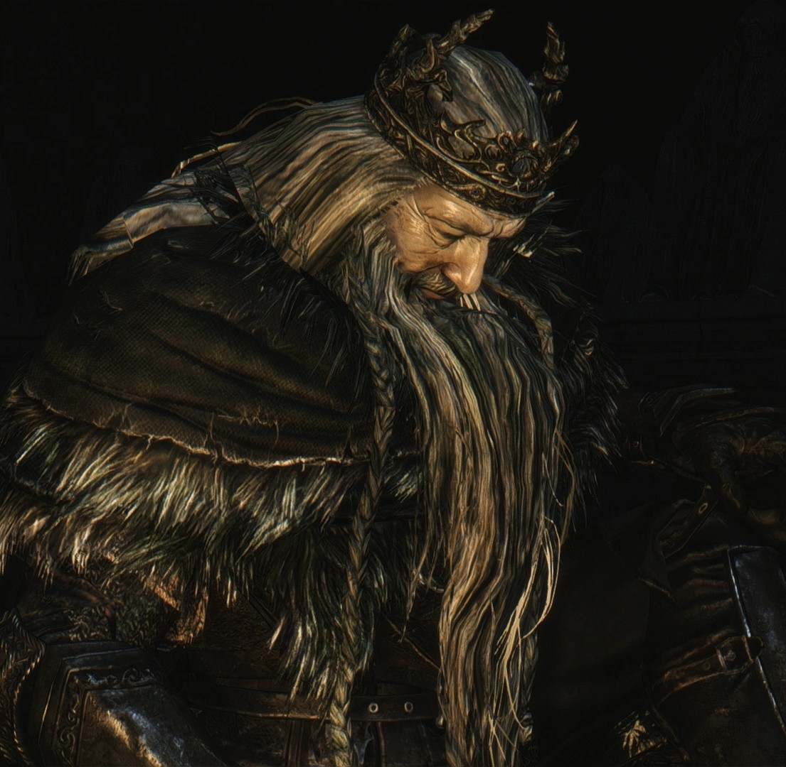
Král Vendrick
Klikni pro rozbor
Zakladatel a vládce Drangleicu. Vendrick kdysi porazil Čtyři Prastaré (reinkarnace bossů z DS1),
založil mocné království a na radu své milované královny Nashandry překročil moře, aby ukradl
moc z říše Obrů.
Když si však uvědomil, že Nashandra je ve skutečnosti dcerou Temnoty (střípek Manuse z prvního
dílu) a touží po Trůnu touhy a Prvním plameni, učinil absolutní oběť. Odešel hluboko do Krypt
nemrtvých, svlékl svou zbroj a nechal za sebou svůj prsten, bez kterého nelze na trůn usednout.
Nyní po hrobce bloudí jen jako obrovitánská, bezduchá prázdná schránka – trpká připomínka toho,
kam vede slepá touha po moci.
Královský prsten (King's Ring)
Prsten, který otevírá obrovské Královské brány po celém Drangleicu. Leží opuštěný
v kryptě, střežen Vendrickovým osobním strážcem Velstadtem, daleko z dosahu
zrádné Nashandry.
Prsten pravého krále.
Brány, jež se jím dají otevřít, se nezachvějí před ničím jiným. "Ukaž Symbol
Krále", hlásají dveře. A jen opravdový monarcha ví, jak těžké břímě tento
symbol představuje.
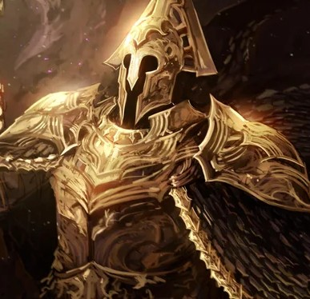
Velstadt, Královská Ochrana
Klikni pro rozbor
Pravá ruka krále Vendricka a jeden z nejušlechtilejších rytířů Drangleicu. Velstadt pocházel ze
vzdálené země a svému králi přísahal absolutní věrnost. Byl natolik oddaný, že když Vendrick
ztratil naději a ukryl se v temné Kryptě nemrtvých (Undead Crypt), Velstadt ho následoval, aby
ho chránil před zbytkem světa a hlavně před zrádnou královnou Nashandrou.
Nekonečný pobyt v Kryptě bez slunečního světla Velstadta nakonec zlomil. Temnota naprosto
pohltila jeho duši i zázraky, které dříve ovládal. Stále však jako neochvějný strážný pes stojí
před hrobkou svého dávno zešílevšího krále, připraven zničit kohokoliv, kdo by rušil jeho
odpočinek.
Kladivo Posvátného zvonce (Sacred Chime Hammer)
Kolosální zbraň Velstadta. Původně šlo o obří klerický zvon pro sesílání světlých
zázraků. Vlivem pobytu v Kryptě však nasákl temnotou a při úderu nyní vyvolává
shluky černé magie.
Zvonec mocného rytíře
Velstadta. Dlouhá léta strávená ve stínu bez jediného paprsku světla změnila
povahu tohoto předmětu i jeho pána. Býval to zvon zlaťavého jasu, nyní zvoní
jen umíráčkem a černí Propasti.
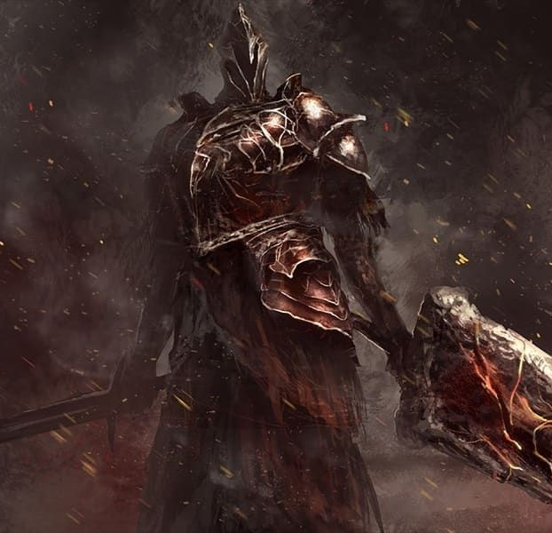
Raime, Rytíř Výparu
Klikni pro rozbor
Známý jako "Fume Knight", Raime byl po boku Velstadta nejschopnějším válečníkem krále Vendricka.
Na rozdíl od Velstadta však Raime poznal pravou podstatu královny Nashandry a označil ji za
hrozbu.
Za toto obvinění byl prohlášen za zrádce a po souboji s Velstadtem vyhnán do Brume Tower. Tam
našel jinou dceru Temnoty – Nadalii. Místo aby ji zničil, uvědomil si krásu její osamělosti a
zasvětil svůj život její ochraně. Z Raimeho se stal Rytíř výparu, jeden z nejtěžších a
nejmilovanějších bossů celé série, využívající gigantický meč a temnou magii.
Ultra velký meč Výparu (FUGS)
Ikonická, neuvěřitelně masivní zbraň (tzv. FUGS), která vyžaduje drastickou sílu.
Meč působí spíše jako zčernalá železná deska než jako čepel.
Meč, jenž patřil
zrádci Raimemu. Byl nasáknutý temnotou a černým mlžným oparem z nitra věže.
Raime kdysi nosil těžký štít jako havrání křídlo, ale nakonec jej odhodil a
místo toho pevně sevřel do rukou Temnotu.
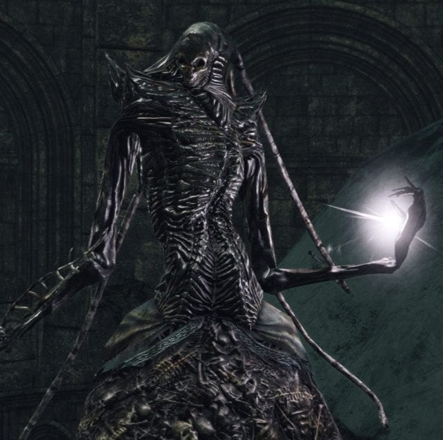
Královna Nashandra
Klikni pro rozbor
Ztělesněná touha. Nashandra je nejmenším a nejzranitelnějším střípkem Temnoty, který vznikl po
porážce Manuse, Otce Propasti z Dark Souls 1. Vědoma si své slabosti, vyhledala bytost nezměrné
moci – Krále Vendricka.
Zmanipulovala ho k válce s Obry, aby pro ni získal moc k usednutí na Trůn touhy. Když Vendrick
její plán prokoukl a znemožnil jí přístup, uvízla na hradě Drangleic a trpělivě vyčkávala. Po
celou hru potichu naviguje Nositele Klenby v naději, že za ni zabije překážky a odemkne cestu k
trůnu, kde se ho sama pokusí nakonec pohltit.
Luk Touhy (Bow of Want)
Speciální zbraň utvořená ze samotné Duše Nashandry. Dokáže vystřelovat šípy
utkané z čiré elektřiny, což odkazuje na falešné světlo, kterým se maskovala
před světem.
Staří říkají, že
Temnota spočívá hluboko v každém z nás a dává o sobě vědět, když propadneme
nezměrné touze po moci. Ona toužila po jediné věci – moci skutečného
panovníka, aby zakryla svou vlastní křehkost.
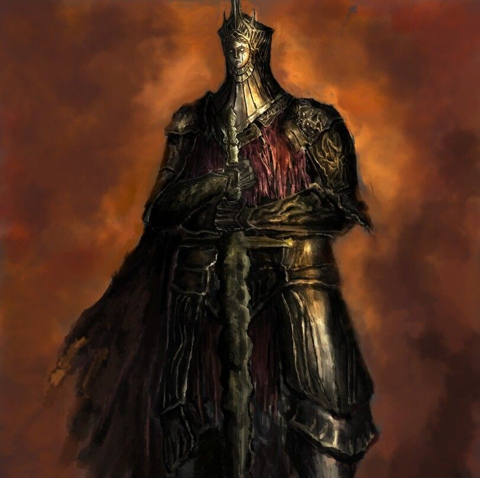
Ohořelý Král ze slonoviny
Klikni pro rozbor
Jeden z nejvznešenějších panovníků v historii série (DLC Crown of the Ivory King). Tento král
objevil Prastarý Chaos (pozůstatky Izalithu a Lůžka Chaosu z DS1) a rozhodl se na něm vybudovat
své ledové město Eleum Loyce, aby pekelné plameny utěsnil a ochránil tak svět.
Za manželku pojal Alsannu, která byla podobně jako Nashandra střípkem temnoty a Manuse. Král to
ovšem věděl, a svou nezměrnou laskavostí ji dokázal vykoupit. Když ledová pečeť začala praskat a
Chaos hrozil pohlcením města, král se svými nejvěrnějšími rytíři sestoupil přímo do plamenů
propasti v zoufalém pokusu je zastavit. Uhořel a zešílel. Nyní čeká na spásnou smrt z vašich
rukou.
Ultra velký meč Krále slonoviny (Ivory King UGS)
Elegantní, ale masivní meč. Při držení obouruč a těžkém útoku se z čepele vynoří
zářivý magický paprsek, připomínající světelný meč, který má enormní dosah i
poškození.
Král Eleum Loyce byl
ke svému lidu nesmírně milosrdný. Když padl do Starého Chaosu, nepřestal
máchat svou čepelí ani ve chvíli, kdy jeho tělo polykaly plameny, jen aby
dal svému městu ještě pár hodin života.
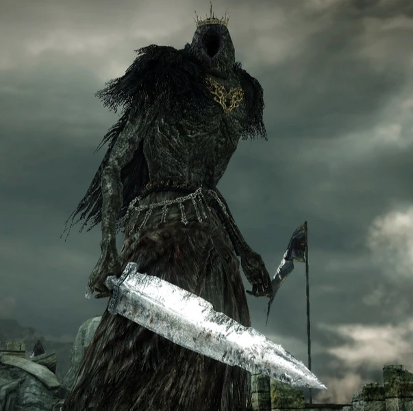
Král Obrů
Klikni pro rozbor
Vládce tajemné a primitivní rasy Obrů zpoza oceánu. Poté, co král Vendrick vpadl na jejich
kontinent a odcizil jim nespecifikovanou, ale vitální Mocenskou trofej (Prize), Král obrů
shromáždil svou armádu, přeplul moře a v drtivé invazi srovnal většinu Drangleicu se zemí.
Setkání s ním je ukázkovým příkladem temporální anomálie, kterou prožívá Nositel Klenby. Do
vzpomínky na dávnou bitvu o Drangleic musíte vstoupit prostřednictvím magie. Tam Krále obrů
porazíte. Zmateným a poraženým pozůstatkem tohoto vládce v "současnosti" pak není nikdo jiný,
než boss Poslední Obr (The Last Giant) – první boss hry, který po vás zuřivě útočí,
protože si i přes propast času pamatuje tvář toho, kdo ho tehdy v minulosti srazil na kolena.
Přízeň obrů (Giant's Kinship)
Klíčový příběhový předmět získaný po porážce Krále obrů ve Vzpomínce. Jde o
jedinou věc, která oživí golemy pod Trůnem touhy a dovolí hráči k trůnu vůbec
přistoupit.
Podivná, dřímající
aura. Není to duše, ale jakási rezonance, spřízněnost s obry. Trůn, na který
Vendrick nikdy neusedl, nyní čeká na nového vládce. Přijmeš jej ty?
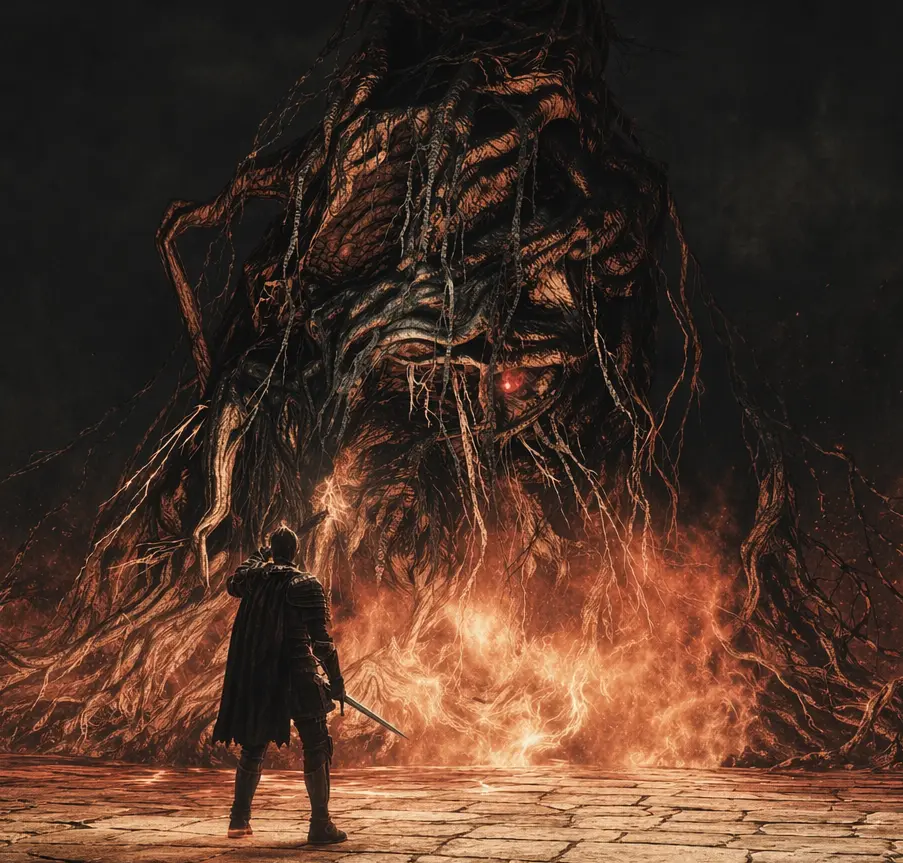
Aldia, Učenec Prvního Hříchu
Klikni pro rozbor
Aldia, starší bratr krále Vendricka, se odmítl smířit s údělem cyklu. Rozhodl se odhalit pravdu o
"Prvním hříchu" – události z úsvitu věků, kdy Gwyn, Pán Světla, nepřirozeně prodloužil Věk Ohně
a tím proklel lidstvo.
Při svých hrůzných experimentech na obrech, dracích i lidech se pokoušel najít cestu mimo dosah
Světla a Temnoty. Ztratil při tom své lidské tělo a proměnil se v hořící masu oživlých kořenů a
plamenů. Aldia neslouží jako tradiční nepřítel, ale jako filozofický průvodce. Nutí Nositele
Klenby zpochybňovat vše, co dělá, a nabízí mu poprvé v sérii třetí volbu: opustit trůn a hledat
novou, neznámou budoucnost.
Zakázané slunce (Forbidden Sun)
Brutálně destruktivní pyromancie navržená v Aldiově Pevnosti. Sesílá gigantickou
kouli ohně s obrovským poloměrem výbuchu.
Magie vytvořená těmi,
kdo se pachtili po pravdě za hranicemi přirozenosti. Jaká pošetilost –
pokoušet se uchopit slunce z oblohy vlastníma rukama. Zanechalo to po sobě
jen popel a blázny.
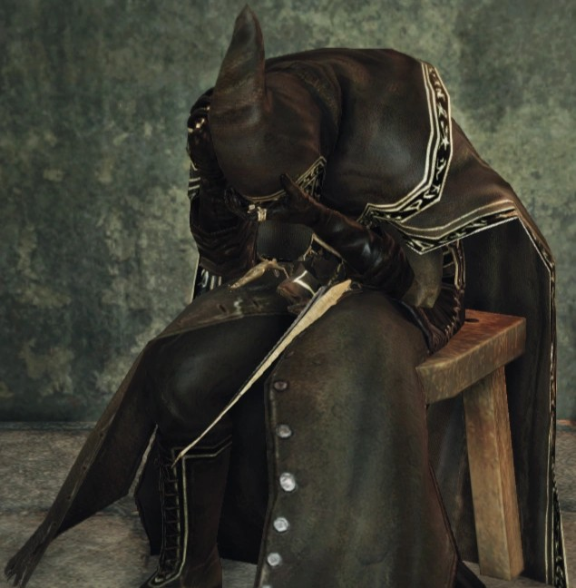
Zrozený Mág Navlaan
Klikni pro rozbor
Bývalý královský popravčí a dvorní mág, jehož najdete zamčeného v magické kleci v hlubinách
Aldiovy Pevnosti. Navlaan se ve volném čase pokoušel rekonstruovat ztracené umění Temné magie
(Hexes). Tyto experimenty s Temnotou roztříštily jeho mysl a stvořily v něm dvě zcela odlišné
osobnosti.
Základní osobností je ustrašený, slušný čaroděj, který hráče prosí, ať ho proboha nepouští z
klece. Pokud však k němu přijdete ve formě Nemrtvého (Hollow), chopí se kormidla jeho druhá,
psychopatická osobnost nájemného vraha. Hráč tak řeší velké dilema – osvobozením Navlaana
vypustí do světa šílence, který ho bude napadat jako fiktivní (invader) hráč na těch nejméně
vhodných místech v celé hře.
Kápě chaosu (Chaos Hood)
Temná, až kultisticky vyhlížející kápě. Část zbroje, kterou vám udělí "zlý"
Navlaan jako odměnu, pokud pro něj v rámci jeho úkolové linky budete vykonávat
vraždy po celém Drangleicu.
Kápě, kterou nosil
kacířský popravčí Navlaan. Navlaan a lidé z jeho domoviny se s prapodivnou
fascinací nořili do tajů Temnoty. Nakonec byla celá jejich vesnice popravena
i s ním. Zůstal jen duch... a kápě nasáklá šílenstvím.